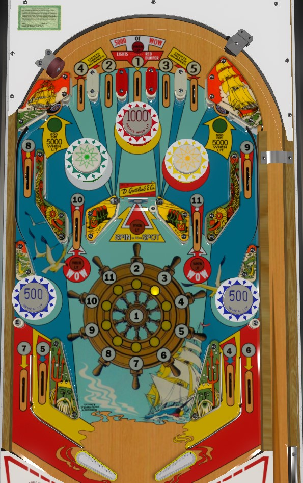

Buccaneer is the replay version. Ship Ahoy and High Seas are add-a-ball versions. Differences between versions are mentioned throughout the guide.
On the plunge: try to get #1 if it is still lit, otherwise plunge for any number you don't already have. After the plunge, shoot the spinner all day to have it spot you additional numbers in the 1-11 sequence. For Buccaneer, once you complete 1-11, the specials are lit and numbers never reset, so your score is just 55,000 points plus the number of spins and pop bumpers you get. On add-a-ball versions, collecting a Wow from the 10 or 11 lanes resets the number sequence and allows you to collect 5,000 point numbers again.
The below picture is of Ship Ahoy, which was taken from the VPX recreation by Loserman76.
The main goal of Buccaneer and friends is to collect the numbers 1-11 around the playfield. The top lanes award numbers 4-2-1-3-5 from left to right; 4 and 5 can also be collected from the in lanes; 6 and 7 are only on the out lanes; 8 and 9 are on the orbit shots/upper side lanes; and 10 and 11 are the lanes directly below the upper left and upper right pop bumpers. Numbered lanes start lit; roll through a lit lane to "collect" that number, which unlights the lane and lights the corresponding number on the ship's wheel in the center of the playfield. Lanes score 5,000 points when lit, or 500 when not lit. An exception is the top center #1 lane, which always scores 5,000 points.
Making the 4, 1, and 5 top lanes light the left, center, and right top pop bumpers respectively.
On Buccaneer, once the 1-11 sequence is completed, the 10 and 11 lanes will be lit alternately for Special, switching every time the spinner registers a spin. These specials are available for the rest of the game, and can only be worth a replay (no extra balls or points).
On the add-a-ball versions, completing the 1-11 sequence immediately scores one Wow. The top center #1 lane will be lit for Wow, and yet another Wow will alternate between the 10 and 11 lanes based on spins of the spinner. If the 10/11 lane Wow is collected, or if the ball is drained when the 10/11 Wow is lit, the number sequence will reset: the #1 lane Wow will stay lit, as will the bumpers, but the 1-11 numbers themselves will go back to their original lanes to be collected again. The #1 lane Wow stays lit until collected. Wow can be worth 1 extra ball or 50,000 points.
On all versions of the game, the #1 top lane lights the top center bumper, and this bumper scores 100 points or 1,000 when lit.
The left and right top bumpers are lit after making the #4 and #5 top lanes. On Buccaneer, these bumpers can score 10 points/100 when lit on 5 ball play, or 100 points/1,000 when lit on 3 ball play. On the add-a-ball versions, these bumpers score 10 points/100 when lit if Wow is set to award extra ball, or 100 points/10,000 (!) when lit if Wow is set to award points.
The lower bumpers look like pop bumpers, but are actually passive bumpers that do not fling the ball away. They score 100 points on Buccaneer 5-ball, 1,000 points on Buccaneer 3-ball, or 500 points on all settings for the add-a-ball versions.
The center spinner awards 100 points per spin, and each spin moves the yellow light around the ship wheel by one position clockwise. If Spin-N-Spot is lit, then when the spinner stops, the number next to the yellow light will be spotted for you. Just like if the ball went through that numbered lane naturally, this "spot" action will score 500 points if the number was already collected, or 5,000 points if not. How frequently Spin-N-Spot is lit varies based on game settings: it's lit all the time on Liberal, about half the time on Medium, and about 1/3 of the time on Conservative. Whether or not Spin-N-Spot is lit can be toggled every time something in the game worth 500 points is scored.
Shooting at the spinner is somewhat of a fickle beast. You need to make sure you don't miss the spinner, or the ball is liable to hit off the two angled walls on either side and be spiked back to the flippers of the center drain faster than you can react. However, if you hit the spinner too squarely in the middle, the ball may be rejected back down the middle to the center drain by the red pop bumper near the top of the playfield. An ideal spinner shot hits slightly to the side of the red bumper so that the ball will ultimately fall into one of the 10 or 11 lanes. Spin-N-Spot is the safest way to collect numbers if it is lit frequently; however, notice that #1 cannot be spotted for you by the spinner, so make sure you get the #1 top lane on a plunge when possible.
Buccaneer and friends have a conventional in/out lane setup. The out lanes are the only places other than Spin-N-Spot to award the numbers 7 (left) and 6 (right) in the 1-11 sequence. On Buccaneer, out lanes always score 5,000 points. On add-a-ball versions, the out lanes score 500 or 5,000 when lit just like most other number lanes. In lanes award the 5 (left) and 4 (right) in the 1-11 sequence and score 500 points or 5,000 when lit.
There is no end of ball bonus.
On Buccaneer, tilt ends game. There are no extra balls, and Special cannot be set to be worth points. Max displayable score is 199,990 points.
On Ship Ahoy and High Seas, tilt penalty is the ball in play plus one additional ball. Up to 5 extra balls can be stored at a time, indicated by the yellow flags on the ship's mast in the upper left of the backbox. The game only advances to the next numbered ball if the ball drains when no Wows are lit. Additional lights on the backglass near the score reels allow the game to count scores as high as 1,999,990 points. Wow can be set to score 1 extra ball or 50,000 points.